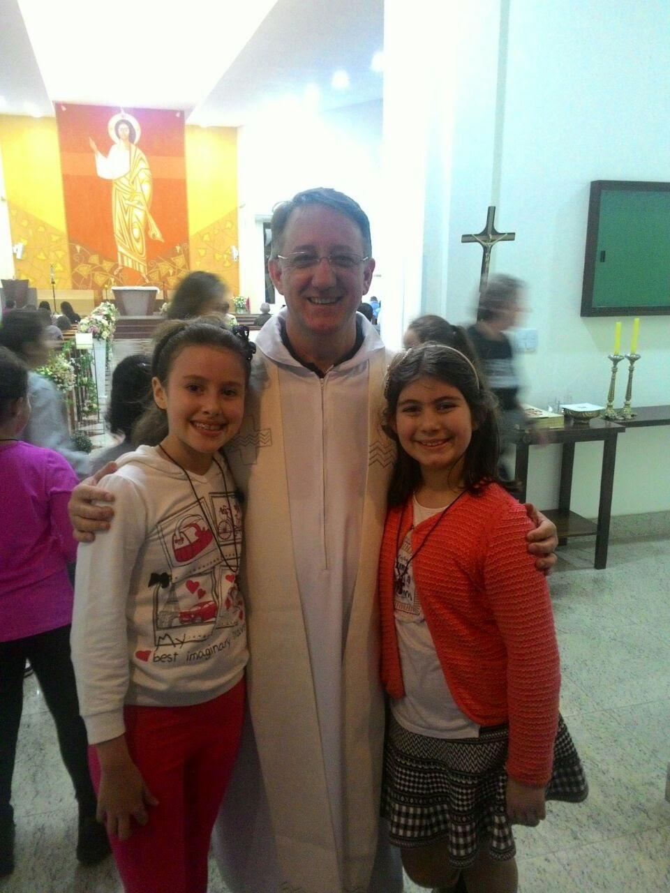

Amigos



fala gay,feliz dia!
é uma tarefa difícil colocar em poucas palavras a grandiosidade que é a nathália de freitas
guedes. ser breve para falar da garota mais especial, mais risonha, mais brilhante que conheço é
impossível. então, só irei agradecer. obrigada por me ouvir, obrigada por se abrir comigo,
obrigada por me aguentar te enchendo o saco, obrigada por ouvir meus choros, minhas risadas,
minhas piadas horríveis, meus sonhos, minhas tristezas e alegrias com a mesma atenção sempre,
obrigada por ser tão chata, obrigada por me irritar todo dia, obrigada por ser um pouco mais você
a cada dia que passa. obrigada por ter me dado a oportunidade de conhecer sua essência. obrigada
por tudo que você faz por mim, pela gente, pela sua família, pelos seus. me admira muito tudo
em você. seu jeito, seus gostos. fulgor é uma palavra que te descreve bem. o mundo é seu, o
futuro é seu, e todo sonho que um dia passar pela sua cabeça é pequeno perto do que você
conquistará na vida, nos próximos e próximos ciclos. sempre estarei aqui para o que precisar,
nos bons e maus momentos. feliz aniversário! voe como você sempre voou, atrás do que te enche
a alma. te amo e não é pouco.
-absy